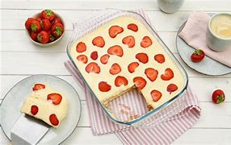
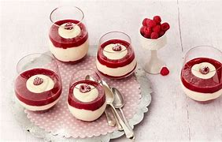

Klassiker
 Tiramisu, klassisch: Mascarpone in eine Schüssel geben, esslöffelweise so viel von der Milch mit einem Schneebesen unterrühren, bis eine cremige Masse entstanden ist . Zucker, Vanille-Zucker und die Hälfte des Amarettos unterrühren. Übrigen Amaretto mit Espresso oder Kaffee verrühren.Die Hälfte der Löffelbiskuits in eine flache eckige Auflaufform (etwa 30 x 18 cm) legen, mit der Hälfte der Kaffee-Amaretto-Mischung beträufeln und mit der Hälfte der Mascarponemasse bedecken. Die restlichen Zutaten in gleicher Reihenfolge daraufschichten.Tiramisu mit Frischhaltefolie zugedeckt in den Kühlschrank stellen und einige Stunden oder über Nacht durchziehen lassen. Vor dem Servieren das Tiramisu dick mit Kakao bestreuen. |
 Erdbeer-Tiramisu: Erdbeeren waschen, putzen und etwa 3 mittelgroße Erdbeeren für die Dekoration beiseitestellen. Übrige Früchte fein schneiden. 1 Pck. Vanillin-Zucker und 2 EL Espresso mit den Erdbeeren vermischen. Restlichen Espresso, Cognac und Vanillin-Zucker verrühren. Die Löffelbiskuits in eine rechteckige Auflaufform (etwa 20 x 30 cm) legen. Das Gebäck mit der Flüssigkeit tränken. Die Erdbeeren darauf verteilen. Tiramisucreme mit Milch und Sahne nach Packungsanleitung zubereiten. Die Tiramisu Creme auf den Erdbeeren verteilen und mind. 2-3 Std. in den Kühlschrank stellen. |
 Dessert im Waffelbecher: Milch in einen Rührbecher geben. Cremepulver hinzufügen und mit einem Mixer (Rührstäbe) auf niedrigster Stufe kurz verrühren, dann etwa 3 Min. auf höchster Stufe cremig aufschlagen. Die Creme in einen Spritzbeutel oder Gefrierbeutel geben, eine kleine Ecke abschneiden und in die Waffelbecher spritzen. Bis zum Servieren kalt stellen. Die Waffelbecher und die Schälchen mit Obststückchen und Süßigkeiten zu einem kleinen Buffet zusammenstellen. Do-it-yourself-Dessert: jeder dekoriert sich das Dessert im Waffelbecher selber mit frischen Früchten oder bunten Süßigkeiten. |
 Mascarpone-Himbeerbecher: Puddingpulver mit Zucker mischen und nach und nach mit mind. 6 EL von der kalten Milch gut verrühren. Übrige Milch aufkochen, vom Herd nehmen, angerührtes Pulver mit einem Schneebesen einrühren. Pudding unter Rühren mind. 1 Min. kochen. Pudding in eine Schüssel füllen und mit Frischhaltefolie, direkt auf den heißen Pudding, belegen, damit sich keine Haut bildet. Pudding erkalten lassen. Himbeeren verlesen, 4-6 Beeren beiseitelegen, die übrigen mit dem Zucker pürieren.3Erkalteten Pudding mit einem Schneebesen kräftig durchrühren, Mascarpone unterrühren.Pudding und Himbeersoße abwechselnd in Gläser schichten und mit Himbeeren garnieren. Dessert bis zum Verzehr kalt stellen und vor dem Servieren mit Puderzucker bestreuen. |